DJ de hardtechno de Bogotá. Creó y dirige UMBRA, y es residente de UMBRA CLUB en Tocancipá.
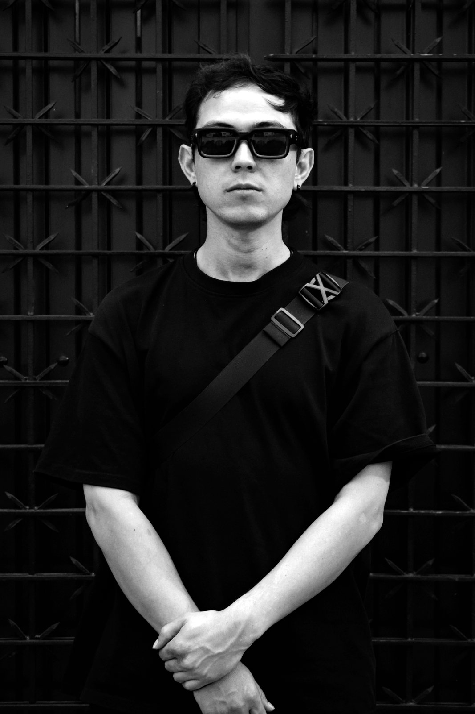
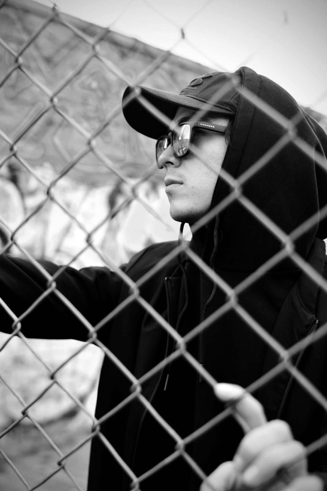
Así nació el nombre. En la música electrónica nunca le bastaba: quería escuchar más, sentir más, estar más tiempo en la pista. Por eso EXCESS.
Hoy el nombre significa otra cosa para él: fuerza, contundencia y mucho exceso de amor y de disciplina.
"No separo al artista del ser humano que está detrás."EXCESS
Aprendió solo. Esta es la ruta.
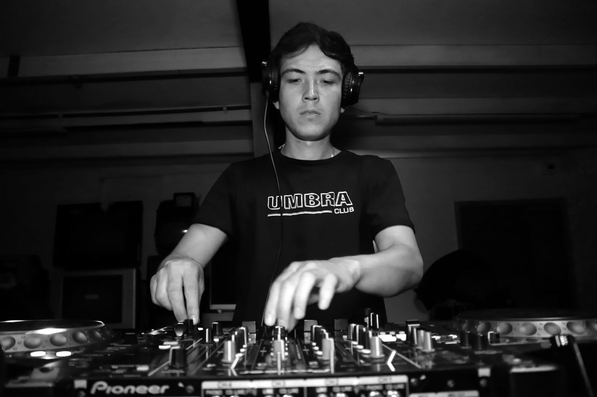
Antes de los platos fueron los instrumentos, sobre todo la percusión. Ahí empezó su relación con el ritmo.
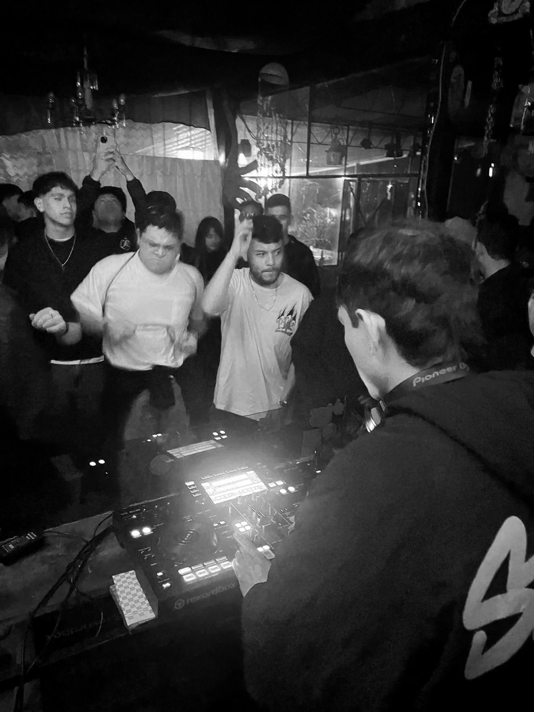
Se acerca a la música electrónica. Lo que empezó como fascinación por la energía de las fiestas se volvió una búsqueda: entender el sonido.
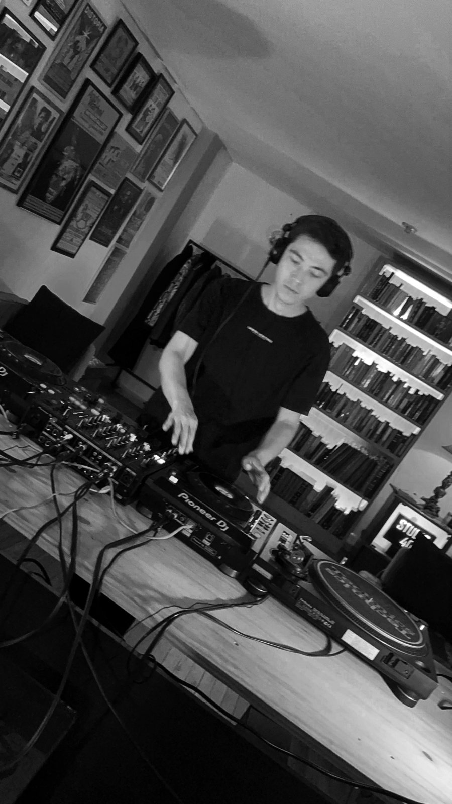
Compra la controladora que acababa de salir y toca para los amigos, sin saber si lo hacía bien o mal. Nunca tomó una clase.
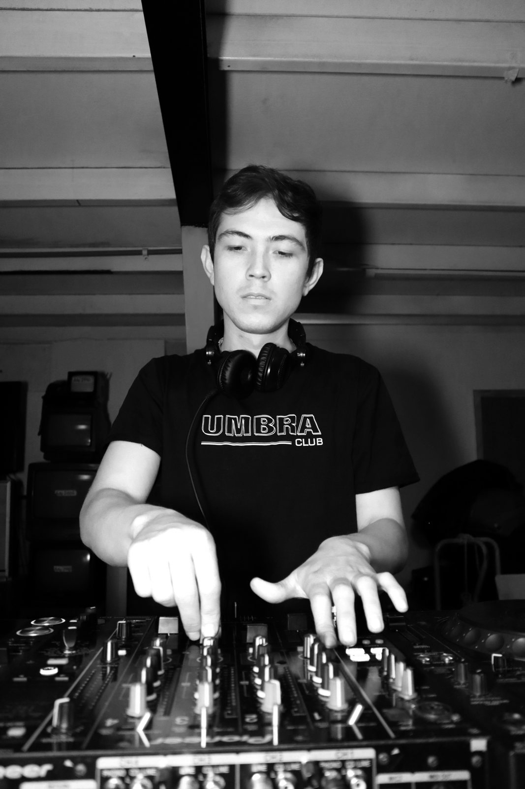
En la etapa decisiva de su formación practicó entre siete y ocho horas diarias para perfeccionar cada mezcla y cada cambio.
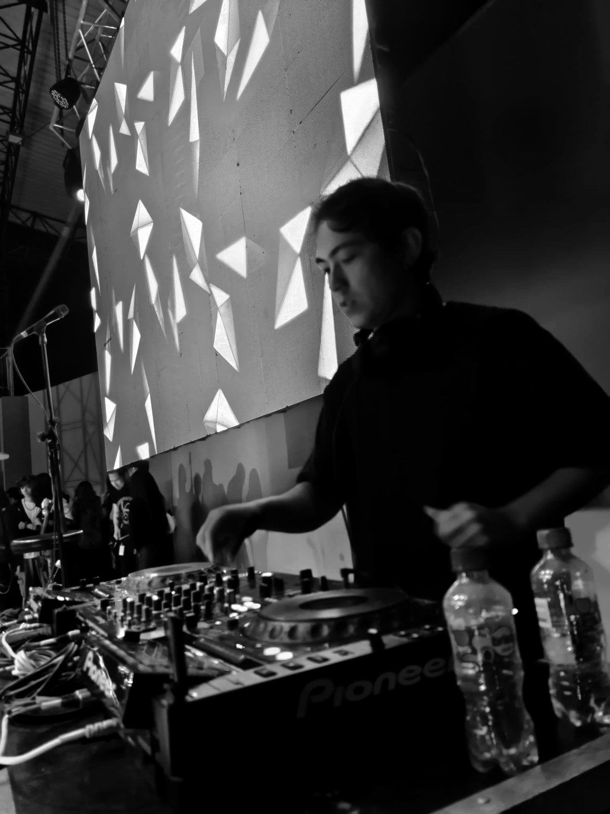
Toca en la despedida del Hard Kapital Tour Europa 2022 y empieza a compartir tarima con nombres de la escena.
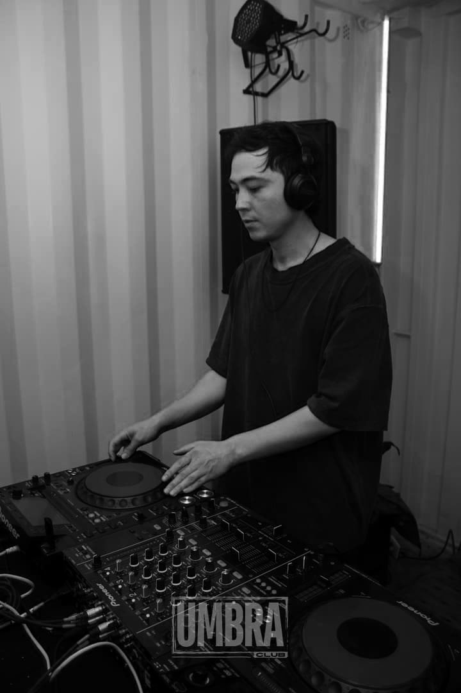
Crea UMBRA: eventos, colectivo, estudio y escuela de DJ. Hoy es residente de UMBRA CLUB, en Tocancipá.
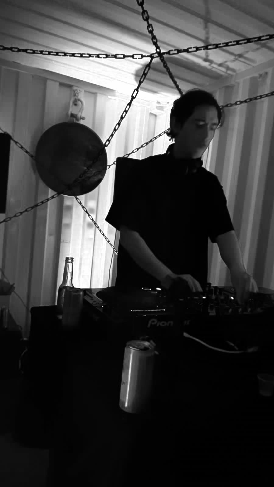
Por primera vez junta todos sus géneros en una sola sesión. "La gente no bajaba de la euforia en la que yo estaba."
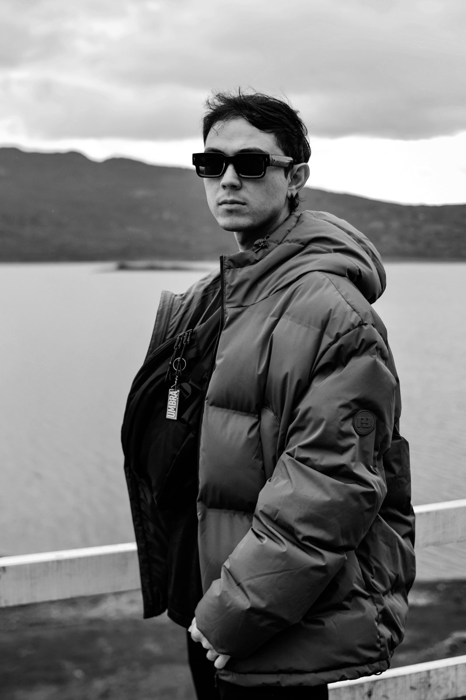
Toca en CDJ-3000, lleva su sonido por la sabana, Bogotá, Ibagué y Medellín, y trabaja en sus primeros tracks.
Serio, contundente y meticuloso, pero con espacio para melodías envolventes y atmósferas que le dan profundidad a sus sets. Cada mezcla, transición y cambio responde a una intención.
Su línea principal. Rápido, duro y directo, como el bombo.
Contundente · Técnico · Preciso · Potente · Ágil
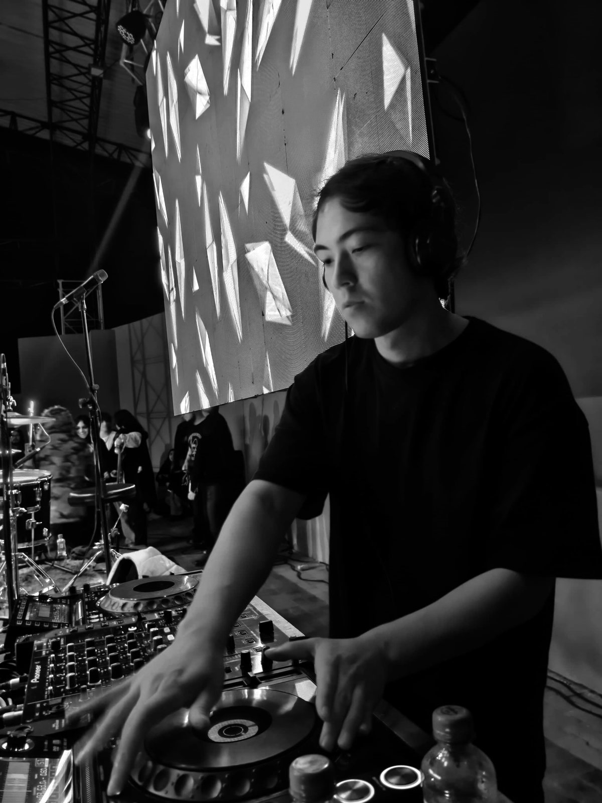
Tres sets de su SoundCloud, en una consola como la que usa en tarima. Dale play, gira el plato para avanzar y salta con los pads.
Lo quiero en mi eventoUMBRA nació como una marca de eventos con identidad propia y creció hacia todo lo que rodea la música. Por ahí han pasado artistas nacionales e internacionales, y también los que apenas empiezan.
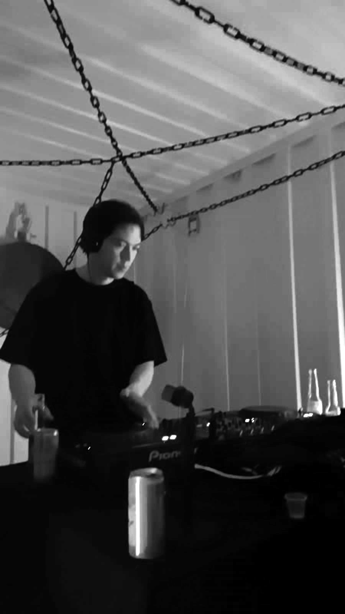
De su residencia en Tocancipá a los clubes de Bogotá, Sibaté, Ibagué y Medellín. Toca un lugar para verlo en el mapa.
Arrastra para recorrer. Toca una foto para verla grande.
Cuéntale la fecha, la ciudad y el evento. El mensaje llega directo a su WhatsApp y él te responde.
Equipo en tarima: CDJ-2000 NXS2 a CDJ-3000. Hardtechno, dark techno e industrial.